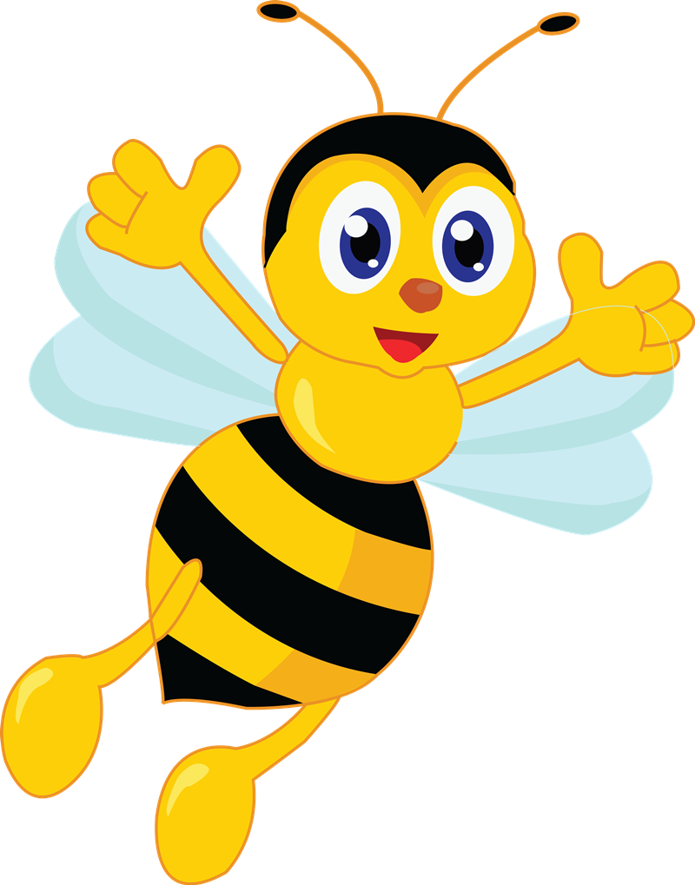

<!DOCTYPE html>
<html class="scroll-smooth"></html>
<head>
  <meta charset="UTF-8" />
  <meta name="viewport" content="width=device-width, initial-scale=1.0" />
  <title>Apicultu.ro | Stiinta naturii</title>
  <script src="https://cdn.tailwindcss.com"></script>
  <link rel="stylesheet" href="style.css" />
  <link rel="icon" href="images/favicon.ico" />
</head>
  <body class="container max-w-none font-sans">
    <section id="#HOME" class="flex flex-col h-screen">
      <nav
        class="border-b-4 border-black fixed w-full bg-white select-none z-50"
      >
        <ul
          class="flex flex-wrap md:flex-nowrap justify-around m-7 text-xl font-bold text-center"
        >
          <li>
            <a href="#HOME" class="no-underline hover:underline font-sans hover:underline-animation"
              >Acasa</a
            >
          </li>
          <li>
            <a href="#DespreProduse" class="no-underline hover:underline font-sans hover:underline-animation"
              >Despre Produse</a
            >
          </li>
          <h1 class="text-2xl font-bold">Apicultu.ro | Stiinta Naturii</h1>
          <li>
            <a href="#DespreAlbine" class="no-underline hover:underline font-sans hover:underline-animation"
              >Despre Albine</a
            >
          </li>
          <li>
            <a href="#ObtinereaMierii" class="no-underline hover:underline font-sans hover:underline-animation"
              >Obtinerea Mierii</a
            >
          </li>
        </ul>
      </nav>
      <header class="flex flex-1 flex-row justify-around items-center">
        <div class="items-center flex justify-center flex-col">
          <h1 class="text-6xl font-bold mb-10 font-sans text-center">
            Apicultu.ro | Stiinta naturii
          </h1>
          <p class="text-3xl font-medium mb-10 text-center">
            O stiinta fara de care <br />
            viata nu ar exista
          </p>
          <a href="#DespreProduse" class="buton">Descopera</a>
        </div>
        
        
      </header>
    </section>
    <section
      id="DespreProduse"
      class="flex flex-col min-h-screen py-10 p-10 bg-yellow-200 bg-opacity-15 flex items-center content-center scroll-mt-20"
    >
      <div class="bg-yellow-100 rounded-3xl h-4/5 content-center pb-10">
        <div class="produse flex flex-row justify-around flex-wrap h-full m-5">
          <div
            class="miere bg-yellow-200 flex sm:basis-full md:basis-1/2 lg:basis-1/4 p-3 flex-col rounded-2xl m-2 text-center"
          >
            <h1 class="font-bold text-3xl p-2">Miere</h1>
            <br />
            <p class="font-medium text-base">
              Mierea este produsul principal pe care il putem obtine de la
              albine. Aceasta este totodata cel mai popular produs apicol.
            </p>
            <a
              href="miere.html"
              class="bg-yellow-500 hover:bg-yellow-400 text-white p-5 font-bold rounded border-yellow-800 flex flex-wrap text-center content-center justify-center mt-5 w-1/2 mx-auto"
              >Afla mai multe !</a
            >
          </div>
          <div
            class="propolis bg-yellow-200 flex sm:basis-full md:basis-1/2 lg:basis-1/4 p-3 flex-col rounded-2xl m-2 text-center"
          >
            <h1 class="font-bold text-3xl p-2">Propolis</h1>
            <br />
            <p class="font-medium text-base">
              Propolisul este un produs natural de origine apicola. Acesta este
              folosit ca remediu natural in multiple patologii.
            </p>
            <a
              href="propolis.html"
              class="bg-yellow-500 hover:bg-yellow-400 text-white p-5 font-bold rounded border-yellow-800 flex flex-wrap text-center content-center justify-center mt-5 w-1/2 mx-auto"
              >Afla mai multe !</a
            >
          </div>
          <div
            class="ceara bg-yellow-200 flex sm:basis-full md:basis-1/2 lg:basis-1/4 p-3 flex-col rounded-2xl m-2 text-center"
          >
            <h1 class="font-bold text-3xl p-2">Ceara</h1>
            <br />
            <p class="font-medium text-base">
              Ceara de albine a fost folosită din cele mai vechi timpuri în
              tratamentul plăgilor infectate și al bolilor de piele, iar în
              farmaceutică se folosește ca emplastru.
            </p>
            <a
              href="ceara.html"
              class="bg-yellow-500 hover:bg-yellow-400 text-white p-5 font-bold rounded border-yellow-800 flex flex-wrap text-center content-center justify-center mt-5 w-1/2 mx-auto"
              >Afla mai multe !</a
            >
          </div>
          <div
            class="polen bg-yellow-200 flex sm:basis-full md:basis-1/2 lg:basis-1/4 p-3 flex-col rounded-2xl m-2 text-center"
          >
            <h1 class="font-bold text-3xl p-2">Polen</h1>
            <br />
            <p class="font-medium text-base">
              Polenul de albine este considerat unul dintre cei mai sanatosi
              nutrienti pe care natura ii poate pune la dispozitie.
            </p>
            <a
              href="polen.html"
              class="bg-yellow-500 hover:bg-yellow-400 text-white p-5 font-bold rounded border-yellow-800 flex flex-wrap text-center content-center justify-center mt-5 w-1/2 mx-auto"
              >Afla mai multe !</a
            >
          </div>
          <div
            class="laptisor bg-yellow-200 flex sm:basis-full md:basis-1/2 lg:basis-1/4 p-3 flex-col rounded-2xl m-2 text-center"
          >
            <h1 class="font-bold text-3xl p-2">Laptisor de Matca</h1>
            <br />
            <p class="font-medium text-base">
              Laptisorul de matca este un produs ce se bucura de o popularitate
              tot mai ridicata, in ultimii ani, gratie proprietatilor sale
              terapeutice, atat pentru piele, cat si pentru intregul organism.
            </p>
            <a
              href="laptisor.html"
              class="bg-yellow-500 hover:bg-yellow-400 text-white p-5 font-bold rounded border-yellow-800 flex flex-wrap text-center content-center justify-center mt-5 w-1/2 mx-auto"
              >Afla mai multe !</a
            >
          </div>
        </div>
      </div>
    </section>
    <section
      id="DespreAlbine"
      class="flex flex-col min-h-screen py-10 bg-yellow-300 bg-opacity-30 w-full mx-0 scroll-mt-20"
    >
      <div class="albine p-10">
        <h1 class="text-5xl font-bold text-orange-600 pb-5">Despre Albine</h1>
        <h2 class="text-2xl font-medium text-orange-600 pb-5">
          Ce sunt albinele?
        </h2>
        <p class="font-medium text-black text-black pb-3">
          Albinele sunt insecte zburătoare care fac parte din suprafamilia
          Apoidea.Albinele se hrănesc cu nectarul florilor (ca sursă de energie,
          grație conținutului de zaharuri) și polen (ca sursă de proteine,
          folosit mai mult la hrănirea larvelor), activitate ce se soldează cu
          polenizarea florilor și, în unele cazuri, cu producerea mierii și
          cerii.Albinele sunt, de fapt, cele mai importante insecte
          polenizatoare și interdependența între ele și plante fac din acestea
          un excelent exemplu al unui tip de simbioză cunoscută sub numele de
          „mutualism”, o asociere între organisme diferite care este avantajoasă
          pentru ambele părți.
        </p>
        <h2 class="text-2xl font-medium text-orange-600 pb-5">
          Durata de viata
        </h2>
        <p class="font-medium text-black text-black pb-3">
          Durata de viață a albinei lucrătoare, depinde de gradul de uzură ca
          urmare a activităților intense desfășurate de aceasta (creșterea
          puietului și activitatea de cules nectar și polen). Astfel albinele
          eclozate în sezonul activ (din primăvară, martie până vara, în jurul
          lunii august) trăiesc numai 40 de zile pe când albinele eclozate
          toamna trăiesc până în primăvara viitoare, când se face schimbul de
          generații (6-9 luni). Durata de viață a trântorilor este între două și
          opt săptămâni și variază în funcție de sezon (activ sau perioadă de
          repaus) și de zona geografică. Matca este cea mai longevivă dintre
          membrii familiei de albine putând trăi până la 8 ani (este însă
          eficientă economic doar un an-doi, după care trebuie schimbată), este
          activă pe toată perioada vieții putând depune 1500-2500 și chiar 3000
          de ouă în 24 de ore în luna iunie. În această perioadă de pontă
          intensă regina este atent îngrijită și bine hrănită de albinele din
          suita sa. În familiile de albine care mor iarna din cauza lipsei
          hranei, matca este ultima care moare, fiind hrănită cu ultima picătură
          de miere.
        </p>
        <h2 class="text-2xl font-medium text-orange-600 pb-5">
          Structura corporala
        </h2>
        <p class="font-medium text-black text-black pb-3">
          Albinele au antene compuse (aproape la toate speciile) din
          douăsprezece segmente la femele și treisprezece la masculi. De
          asemenea au câte două perechi de aripi (perechea anterioară fiind mai
          mare). Unele caste pot avea aripi mai mici (nefuncționale), dar nici o
          specie nu este lipsită de aripi.
        </p>
      </div>
    </section>
    <section
      id="ObtinereaMierii"
      class="flex flex-col items-center min-h-screen py-10 bg-yellow-400 bg-opacity-50 w-full mx-0 scroll-mt-20"
    >
      <div class="obtinere p-10 flex flex-column">
        <div>
          <h1 class="text-5xl font-bold text-gray pb-5">
            Cum se obtine mierea?
          </h1>

          <h2 class="text-2xl font-medium text-black pb-5">
            Colectarea nectarului de către albine
          </h2>
          <p class="font-medium text-black tblack pb-3">
            Albinele lucrătoare părăsesc stupul în căutarea florilor. Acestea
            sunt atrase de culoarea și mirosul florilor și folosesc antenele
            pentru a detecta și evalua nectarul. Odată ce au găsit o sursă
            adecvată, albinele extrag nectarul cu ajutorul trompei și îl
            depozitează în „sacul de miere”, o structură specializată din corpul
            lor.După ce au colectat nectarul, albinele se întorc la stup și
            transferă nectarul către alte albine lucrătoare prin trofalaxie (un
            proces de regurgitare a nectarului de către albine). Aceste albine
            lucrătoare încep procesul de transformare a nectarului în miere.
            Acest proces este esențial pentru conservarea mierii, deoarece
            reduce conținutul de apă și împiedică fermentarea.
          </p>

          <h2 class="text-2xl font-medium text-black pb-5">
            Transformarea nectarului în miere în stup
          </h2>
          <p class="font-medium text-black text-black pb-3">
            Nectarul conține aproximativ 70-80% apă. Pentru a transforma
            nectarul în miere, albinele trebuie să reducă conținutul de apă la
            aproximativ 18-20%. Acest lucru se realizează prin evaporare, un
            proces facilitat de circulația aerului în stup și de bătăile
            aripilor albinelor. Pe lângă evaporare, albinele adaugă enzime
            specifice, precum invertaza, care descompun zaharoza în glucoză și
            fructoză. Aceste zaharuri mai simple sunt mai stabile și împiedică
            fermentarea nectarului. De asemenea, enzimele contribuie la
            dezvoltarea gustului și aromei specifice mierii.Odată ce nectarului
            i s-a redus conținutul de apă și a fost îmbogățit cu enzime, acesta
            este depozitat în celulele fagurilor de ceară. Albinele sigilează
            celulele cu capace de ceară, permițând astfel mierii să se matureze.
            În această perioadă, mierea devine mai vâscoasă și își dezvoltă
            caracteristicile finale.
          </p>
          <h2 class="text-2xl font-medium text-black pb-5">
            Rolul apicultorilor în producția de miere
          </h2>
          <p class="font-medium text-black text-black pb-3">
            Rolul apicultorilor în producerea mierii este esențial, având
            responsabilități multiple și variate. În primul rând, apicultorii au
            grijă de albine, asigurându-se că acestea au suficientă hrană și
            apă, sunt protejate de paraziți și boli și că stupii sunt în
            condiții optime pentru producerea mierii. De asemenea, aceștia se
            ocupă de colectarea mierii produse de albine.Apicultorii joacă un
            rol de bază în producția de miere. Aceștia trebuie să monitorizeze
            sănătatea stupilor, să prevină bolile și infestările cu dăunători și
            să asigure condiții optime pentru albine. Îngrijirea corectă a
            stupilor este esențială pentru obținerea unei recolte de miere de
            calitate.Colectarea mierii este un proces delicat și necesită
            experiență. Apicultorii deschid stupii și îndepărtează fagurii plini
            de miere. Aceștia folosesc fumătoare pentru stupi de albine, pentru
            a calma albinele și a facilita manipularea fagurilor. Recoltarea se
            face de obicei în timpul sezonului cald, când albinele au avut
            suficient timp să producă și să matureze mierea.
          </p>
        </div>
        <div class="flex items-center ml-5 hidden xl:flex">
          <iframe
            width="500"
            height="300"
            src="https://www.youtube.com/embed/Lx6dhaNz88U?si=TniKV0tu-X8itBUk"
            title="YouTube video player"
            frameborder="0"
            allow="accelerometer; autoplay; clipboard-write; encrypted-media; gyroscope; picture-in-picture; web-share"
            referrerpolicy="strict-origin-when-cross-origin"
            allowfullscreen
          ></iframe>
        </div>
      </div>
    </section>
    <footer
      class="flex min-h-96 justify-center content-center items-center text-center bg-black bg-opacity-75"
    >
      <div
        class="foot flex flex-col md:flex-row justify-evenly w-full items-center content-center"
      >
        <div class="info text-left">
          <h1 class="font-bold text-white text-2xl">
            Contact :<br />
            Email : gavrilbogdan35@yahoo.com <br />Apel telefonic : 0736 810 678
          </h1>
        </div>
        <div class="flex items-center justify-center">
          <iframe
            class="flex items-center"
            src="https://www.google.com/maps/embed?pb=!1m18!1m12!1m3!1d1391.9257259846972!2d21.244153369061326!3d45.75412392090327!2m3!1f0!2f0!3f0!3m2!1i1024!2i768!4f13.1!3m3!1m2!1s0x47456762c4e45fff%3A0x93c273a8151682d4!2sLiceul%20Teoretic%20%E2%80%9EJean-Louis%20Calderon%E2%80%9D!5e0!3m2!1sro!2sro!4v1740425504534!5m2!1sro!2sro"
            width="300"
            height="250"
            style="border: 0"
            allowfullscreen=""
            loading="lazy"
            referrerpolicy="no-referrer-when-downgrade"
          ></iframe>
        </div>
      </div>
    </footer>
    <div class="legal pt-5 bg-black bg-opacity-75 mx-auto text-center pb-5">
      <h1
        class="border-t-2 border-white mx-4 sm:mx-6 md:mx-8 lg:mx-12 xl:mx-16 text-white font-bold pt-5"
      >
        Ⓒ2025 Apicultu.ro | Toate drepturile rezervate.
      </h1>
    </div>
  </body>
</html>
